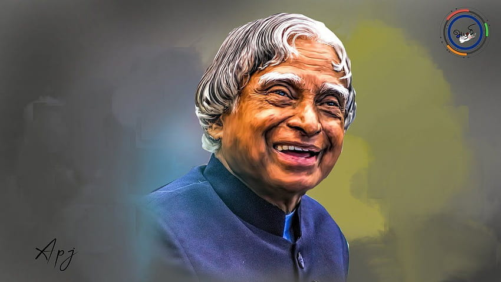

Biography
APJ Abdul Kalam (Avul Pakir Jainulabdeen Abdul Kalam ) was born on 15th October 1931 in the temple town of Rameswaram, located in Tamil Nadu. He was born to a very poor Tamil Muslim family. His father was a boatman, and an imam in a local mosque, and his mother was a housewife. Due to poverty, Dr. Abdul Kalam had to sell newspapers in his early childhood to run his family, but he was a hardworking and sharp student. He started his schooling from Schwartz Higher School in Ramanathapuram. He then moved on to complete his graduation in physics from the University of Madras and after that to study aerospace technology from the Madras Institute of Technology.
Dr. Kalam started his career as a scientist from the Aeronautical Development Establishment of DRDO and worked under the eminent scientist Vikram Sarabhai. He started his contribution as a scientist in 1969 when he was the project director of India's first satellite Launch Vehicle (SLV-III) was used to launch the satellite Rohini in 1980 and is considered the developer of the Polar Satellite Launch Vehicle.
He also played a crucial role in the development of Agni and Prithvi missiles. Dr. Kalam was the Chief Scientific Adviser to the Prime Minister in 1992 when the Pokhran-II nuclear tests were conducted. In 2002, Dr. Kalam was elected as the 11th President of India. He had received the title of "People's President". During his tenure as President, he had rejected the mercy plea of the Dhananjoy Chatterjee, convicted of brutal rape and murder. He was only the third President to be awarded the Bharat Ratna. He also imposed President's rule in Bihar in 2005. However, he did not file for Presidency for a second term and instead returned to the field of academics and continued to do so till his death in 2015.
Dr. Kalam started his career as a scientist from the Aeronautical Development Establishment of DRDO and worked under the eminent scientist Vikram Sarabhai. He started his contribution as a scientist in 1969 when he was the project director of India's first satellite Launch Vehicle (SLV-III) was used to launch the satellite Rohini in 1980 and is considered the developer of the Polar Satellite Launch Vehicle.
He also played a crucial role in the development of Agni and Prithvi missiles. Dr. Kalam was the Chief Scientific Adviser to the Prime Minister in 1992 when the Pokhran-II nuclear tests were conducted. In 2002, Dr. Kalam was elected as the 11th President of India. He had received the title of "People's President". During his tenure as President, he had rejected the mercy plea of the Dhananjoy Chatterjee, convicted of brutal rape and murder. He was only the third President to be awarded the Bharat Ratna. He also imposed President's rule in Bihar in 2005. However, he did not file for Presidency for a second term and instead returned to the field of academics and continued to do so till his death in 2015.
Awards and Honours
| Year of Award | Name of Award or Honours |
|---|---|
| 2014 | Honorary professor |
| 2014 | Doctor of Science |
| 2013 | Von Braun Award |
| 2012 | Doctor of Laws |
| 2011 | IEEE Honorary Membership |
| 2010 | Doctor of Enginnering |
| 2009 | Honorary Doctorate |
| 2009 | International von Kármán Wings Award |
| 2009 | Hover Medal |
| 2008 | Doctor of Science |
| 2008 | Doctor of Enginnering |
| 2008 | Doctor of Science |
| Year of Award | Name of Award or Honours |
|---|---|
| 2007 | Honorary Doctorate of Science and Technology |
| 2007 | King Charles II Medal |
| 2007 | Honorary Doctorate of Science |
| 2000 | Ramanujan Award |
| 1998 | Veer Savarkar Award |
| 1997 | Indra Gandhi Award of National Integration |
| 1997 | Bharat Ratan |
| 1995 | Honorary Fellow |
| 1994 | Distinguished Fellow |
| 1990 | Padma Vibhushan |
| 1981 | Padma Bhushan |